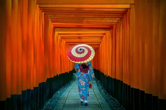

Saltar al contingut
Destinacions
Inici
Destinacions
Enllaços
Destinacions del món
París
Descobreix la ciutat de la llum i la seva cultura.
Veure més

Kioto
Tradició del Japó.
Veure més
Consells per als teus viatges
Planifica amb antelació:
Investiga destinacions i prepara itineraris per aprofitar millor el temps.
Pack intel·ligent:
Porta només el necessari i prepara equipatge versàtil per totes les situacions.
Gaudeix del moment:
Captura records, però no oblidis viure l'experiència plena en directe.